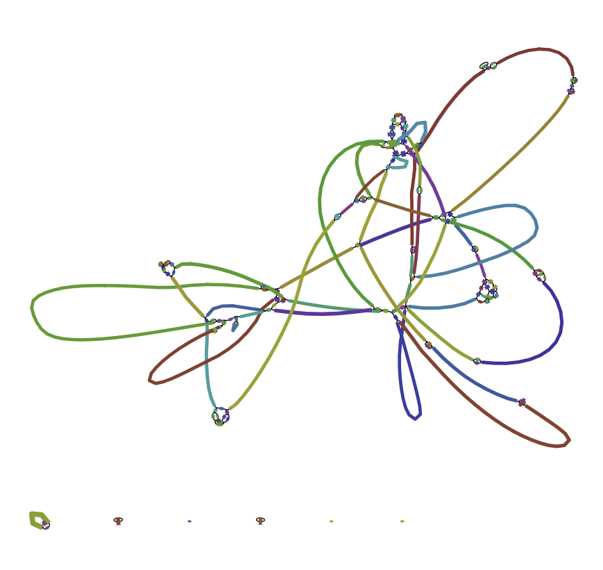

Pacbio reads: assembly with command line tools
Keywords: de novo assembly, PacBio, PacificBiosciences, Illumina, command line, Canu, Circlator, BWA, Spades, Pilon, Microbial Genomics Virtual Laboratory
This tutorial demonstrates how to use long Pacbio sequence reads to assemble a bacterial genome, including correcting the assembly with short Illumina reads.
Note: this tutorial uses canu v1.5.
Resources
Tools (and versions) used in this tutorial include:
- canu 1.5
- infoseq and sizeseq (part of EMBOSS) 6.6.0.0
- circlator 1.5.1 [recently updated]
- bwa 0.7.15
- samtools 1.3.1
- spades 3.10.1
- makeblastdb and blastn (part of blast) 2.4.0+
- pilon 1.20
Learning objectives
At the end of this tutorial, be able to:
- Assemble and circularise a bacterial genome from PacBio sequence data.
- Recover small plasmids missed by long read sequencing, using Illumina data
- Explore the effect of polishing assembled sequences with a different data set.
Overview
Simplified version of workflow:

Get data
The files we need are:
pacbio.fastq.gz : the PacBio readsillumina_R1.fastq.gz : the Illumina forward readsillumina_R2.fastq.gz : the Illumina reverse reads
If you already have the files, skip forward to next section, Assemble.
Otherwise, this section has information about how to find and move the files:
PacBio files
- Open the command line.
- Navigate to or create the directory in which you want to work.
- If the files are already on your server, you can symlink by using
ln -s real_file_path [e.g. data/sample_name/pacbio1.fastq.gz] chosen_symlink_name [e.g. pacbio1.fastq.gz]
-
Alternatively, obtain the input files from elsewhere, e.g. from the BPA portal. (You will need a password.)
-
Pacbio files are often stored in the format:
Sample_name/Cell_name/Analysis_Results/long_file_name_1.fastq.gz
-
We will use the
longfilename.subreads.fastq.gz files. -
The reads are usually split into three separate files because they are so large.
-
Right click on the first
subreads.fastq.gz file and “copy link address”. -
In the command line, type:
wget --user username --password password [paste link URL for file]
- Repeat for the other two
subreads.fastq.gz files. - Join the files:
cat pacbio*.fastq.gz > pacbio.fastq.gz
- If the files are not gzipped, type:
cat pacbio*.fastq | gzip > pacbio.fastq.gz
Illumina files
- We will also use 2 x Illumina (Miseq) fastq.gz files.
- These are the
R1.fastq.gz andR2.fastq.gz files. - Symlink or “wget” these files as described above for PacBio files.
- Shorten the name of each of these files:
mv longfilename_R1.fastq.gz illumina_R1.fastq.gz mv longfilename_R2.fastq.gz illumina_R2.fastq.gz
Sample information
The sample used in this tutorial is a gram-positive bacteria called Staphylococcus aureus (sample number 25747). This particular sample is from a strain that is resistant to the antibiotic methicillin (a type of penicillin). It is also called MRSA: methicillin-resistant Staphylococcus aureus. It was isolated from (human) blood and caused bacteraemia, an infection of the bloodstream.
Assemble
- We will use the assembly software called Canu.
- Run Canu with these commands:
canu -p canu -d canu_outdir genomeSize=2.8m -pacbio-raw pacbio.fastq.gz
- the first
canutells the program to run -p canunames prefix for output files (“canu”)-d canu_outdirnames output directory (“canu_outdir”)-
genomeSizeonly has to be approximate.- e.g. Staphylococcus aureus, 2.8m
- e.g. Streptococcus pyogenes, 1.8m
-
Canu will correct, trim and assemble the reads.
- Various output will be displayed on the screen.
Check the output
Move into ls to see the output files.
- The
canu.contigs.fasta are the assembled sequences. - The
canu.unassembled.fasta are the reads that could not be assembled. - The
canu.correctedReads.fasta.gz are the corrected Pacbio reads that were used in the assembly. - The
canu.file.gfa is the graph of the assembly. - Display summary information about the contigs: (
infoseqis a tool from EMBOSS)
infoseq canu.contigs.fasta
- This will show the contigs found by Canu. e.g.,
- tig00000001 2851805
This looks like a chromosome of approximately 2.8 million bases.
This matches what we would expect for this sample. For other data, Canu may not be able to join all the reads into one contig, so there may be several contigs in the output. Also, the sample may contain some plasmids and these may be found full or partially by Canu as additional contigs.
Change Canu parameters if required
If the assembly is poor with many contigs, re-run Canu with extra sensitivity parameters; e.g.
canu -p prefix -d outdir corMhapSensitivity=high corMinCoverage=0 genomeSize=2.8m -pacbio-raw pacbio.fastq.gz
Questions
Question
How do long- and short-read assembly methods differ?
Answer
short reads: De Bruijn graphs; long reads: a move back towards simpler overlap-layout-consensus methods.
Question
Where can we find out the what the approximate genome size should be for the species being assembled?
Answer
NCBI Genomes - enter species name - click on Genome Assembly and Annotation report - sort table by clicking on the column header Size (Mb) - look at range of sizes in this column.
Question
In the assembly output, what are the unassembled reads? Why are they there?
Answer
Question
What are the corrected reads? How did canu correct the reads?
Answer
Question
Where could you view the output .gfa and what would it show?
Answer
Trim and circularise
Run Circlator
Circlator identifies and trims overhangs (on chromosomes and plasmids) and orients the start position at an appropriate gene (e.g. dnaA). It takes in the assembled contigs from Canu, as well as the corrected reads prepared by Canu.
Overhangs are shown in blue:
 Adapted from Figure 1. Hunt et al. Genome Biology 2015
Adapted from Figure 1. Hunt et al. Genome Biology 2015
Move back into your main analysis folder.
Run Circlator:
circlator all --threads 8 --verbose canu_outdir/canu.contigs.fasta canu_outdir/canu.correctedReads.fasta.gz circlator_outdir
--threadsis the number of cores: change this to an appropriate number--verboseprints progress information to the screencanu_outdir/canu.contigs.fastais the file path to the input Canu assemblycanu_outdir/canu.correctedReads.fasta.gzis the file path to the corrected Pacbio reads - note, fastA not fastQcirclator_outdiris the name of the output directory.
Some output will print to screen. When finished, it should say “Circularized x of x contig(s)”.
Check the output
Move into the ls to list files.
Were the contigs circularised? :
less 04.merge.circularise.log
- Yes, the contig was circularised (last column).
- Type “q” to exit.
Where were the contigs oriented (which gene)? :
less 06.fixstart.log
- Look in the “gene_name” column.
- The contig has been oriented at tr|A0A090N2A8|A0A090N2A8_STAAU, which is another name for dnaA. This is typically used as the start of bacterial chromosome sequences.
What are the trimmed contig sizes? :
infoseq 06.fixstart.fasta
- tig00000001 2823331 (28564 bases trimmed)
This trimmed part is the overlap.
Re-name the contigs file:
- The trimmed contigs are in the file called
06.fixstart.fasta . - Re-name it
contig1.fasta :
mv 06.fixstart.fasta contig1.fasta
Open this file in a text editor (e.g. nano: nano contig1.fasta) and change the header to “>chromosome”.
Move the file back into the main folder (mv contig1.fasta ../).
Options
If all the contigs have not circularised with Circlator, an option is to change the --b2r_length_cutoff setting to approximately 2X the average read depth.
Questions
Question
Were all the contigs circularised? Why/why not?
Answer
Question
Circlator can set the start of the sequence at a particular gene. Which gene does it use? Is this appropriate for all contigs?
Answer
Uses dnaA for the chromosomal contig. For other contigs, uses a centrally-located gene. However, ideally, plasmids would be oriented on a gene such as repA. It is possible to provide a file to Circlator to do this.
Find smaller plasmids
Pacbio reads are long, and may have been longer than small plasmids. We will look for any small plasmids using the Illumina reads.
This section involves several steps:
- Use the Canu+Circlator output of a trimmed assembly contig.
- Map all the Illumina reads against this Pacbio-assembled contig.
- Extract any reads that didn’t map and assemble them together: this could be a plasmid, or part of a plasmid.
- Look for overhang: if found, trim.
Align Illumina reads to the PacBio contig
- Index the contigs file:
bwa index contig1.fasta
- Align Illumina reads using using bwa mem:
bwa mem -t 8 contig1.fasta illumina_R1.fastq.gz illumina_R2.fastq.gz | samtools sort > aln.bam
bwa memis the alignment tool-t 8is the number of cores: choose an appropriate numbercontig1.fastais the input assembly fileillumina_R1.fastq.gz illumina_R2.fastq.gzare the Illumina reads| samtools sortpipes the output to samtools to sort> aln.bamsends the alignment to the filealn.bam
Extract unmapped Illumina reads
- Index the alignment file:
samtools index aln.bam
- Extract the fastq files from the bam alignment - those reads that were unmapped to the Pacbio alignment - and save them in various “unmapped” files:
samtools fastq -f 4 -1 unmapped.R1.fastq -2 unmapped.R2.fastq -s unmapped.RS.fastq aln.bam
fastqis a command that coverts a.bam file into fastq format-f 4: only output unmapped reads-1: put R1 reads into a file calledunmapped.R1.fastq -2: put R2 reads into a file calledunmapped.R2.fastq -s: put singleton reads into a file calledunmapped.RS.fastq aln.bam: input alignment file
We now have three files of the unampped reads:
Assemble the unmapped reads
- Assemble with Spades:
spades.py -1 unmapped.R1.fastq -2 unmapped.R2.fastq -s unmapped.RS.fastq --careful --cov-cutoff auto -o spades_assembly
-1is input file forward-2is input file reverse-sis unpaired--carefulminimizes mismatches and short indels--cov-cutoff autocomputes the coverage threshold (rather than the default setting, “off”)-ois the output directory
Move into the output directory (
infoseq contigs.fasta
- 78 contigs were assembled, with the max length of 2250 (the first contig).
- All other nodes are < 650kb so we will disregard as they are unlikely to be plasmids.
- Type “q” to exit.
- We will extract the first sequence (NODE_1):
samtools faidx contigs.fasta
samtools faidx contigs.fasta NODE_1_length_2550_cov_496.613 > contig2.fasta
- This is now saved as
contig2.fasta - Open in nano and change header to “>plasmid”.
Trim the plasmid
To trim any overhang on this plasmid, we will blast the start of contig2 against itself.
- Take the start of the contig:
head -n 10 contig2.fasta > contig2.fa.head
- We want to see if it matches the end (overhang).
- Format the assembly file for blast:
makeblastdb -in contig2.fasta -dbtype nucl
- Blast the start of the assembly (.head file) against all of the assembly:
blastn -query contig2.fa.head -db contig2.fasta -evalue 1e-3 -dust no -out contig2.bls
- Look at
contig2.bls to see hits:
less contig2.bls
- The first hit is at start, as expected.
- The second hit is at 2474 all the way to the end - 2550.
- This is the overhang.
- Trim to position 2473.
- Index the plasmid.fa file:
samtools faidx contig2.fasta
- Trim:
samtools faidx contig2.fasta plasmid:1-2473 > plasmid.fa.trimmed
-
plasmidis the name of the contig, and we want the sequence from 1-2473. -
Open this file in nano (
nano plasmid.fa.trimmed) and change the header to “>plasmid”, save. - We now have a trimmed plasmid.
- Move file back into main folder:
cp plasmid.fa.trimmed ../
- Move into the main folder.
Plasmid contig orientation
The bacterial chromosome was oriented at the gene dnaA. Plasmids are often oriented at the replication gene, but this is highly variable and there is no established convention. Here we will orient the plasmid at a gene found by Prodigal, in Circlator:
circlator fixstart plasmid.fa.trimmed plasmid_fixstart
fixstartis an option in Circlator just to orient a sequence.plasmid.fa.trimmedis our small plasmid.plasmid_fixstartis the prefix for the output files.
View the output:
less plasmid_fixstart.log
- The plasmid has been oriented at a gene predicted by Prodigal, and the break-point is at position 1200.
- Change the file name:
cp plasmid_fixstart.fasta contig2.fasta
Collect contigs
cat contig1.fasta contig2.fasta > genome.fasta
- See the contigs and sizes:
infoseq genome.fasta
- chromosome: 2823331
- plasmid: 2473
Questions
Question
Why is this section so complicated?
Answer
Finding small plasmids is difficult for many reasons! This paper has a nice summary: On the (im)possibility to reconstruct plasmids from whole genome short-read sequencing data. doi: https://doi.org/10.1101/086744
Question
Why can PacBio sequencing miss small plasmids?
Answer
Library prep size selection
Question
We extract unmapped Illumina reads and assemble these to find small plasmids. What could they be missing?
Answer
Repeats that have mapped to the PacBio assembly.
Question
How do you find a plasmid in a Bandage graph?
Answer
It is probably circular, matches the size of a known plasmid, and has a rep gene.
Question
Are there easier ways to find plasmids?
Answer
Possibly. One option is the program called Unicycler which may automate many of these steps. https://github.com/rrwick/Unicycler
Correct
We will correct the Pacbio assembly with Illumina reads.
Make an alignment file
- Align the Illumina reads (R1 and R2) to the draft PacBio assembly, e.g.
genome.fasta :
bwa index genome.fasta bwa mem -t 32 genome.fasta illumina_R1.fastq.gz illumina_R2.fastq.gz | samtools sort > aln.bam
-
-tis the number of cores: set this to an appropriate number. (To find out how many you have,grep -c processor /proc/cpuinfo). -
Index the files:
samtools index aln.bam samtools faidx genome.fasta
- Now we have an alignment file to use in Pilon:
aln.bam
Run Pilon
- Run:
pilon --genome genome.fasta --frags aln.bam --output pilon1 --fix all --mindepth 0.5 --changes --verbose --threads 32
--genomeis the name of the input assembly to be corrected--fragsis the alignment of the reads against the assembly--outputis the name of the output prefix--fixis an option for types of corrections--mindepthgives a minimum read depth to use--changesproduces an output file of the changes made--verboseprints information to the screen during the run--threads: set this to an appropriate number
Look at the changes file:
less pilon1.changes
Example:

Look at the details of the fasta file:
infoseq pilon1.fasta
- chromosome - 2823340 (net +9 bases)
- plasmid - 2473 (no change)
Option:
If there are many changes, run Pilon again, using the
Genome output
- Change the file name:
cp pilon1.fasta assembly.fasta
- We now have the corrected genome assembly of Staphylococcus aureus in .fasta format, containing a chromosome and a small plasmid.
Questions
Q:
Question
Why don’t we correct earlier in the assembly process?
Answer
We need to circularise the contigs and trim overhangs first.
Question
Why can we use some reads (Illumina) to correct other reads (PacBio) ?
Answer
Illumina reads have higher accuracy.
Question
Could we just use PacBio reads to assemble the genome?
Answer
Yes, if accuracy adequate.
Advanced analysis
This example shows a more complex analysis where many more steps are involved in the finding the small plasmid. The sample used is Staphylococcus aureus (sample number 25745).
Assemble
canu -p canu -d canu_outdir genomeSize=2.8m -pacbio-raw pacbio.fastq.gz
- Output: 2 contigs, likely to be the chromosome (2748030) and a large plasmid (49397).
Trim and circularise
circlator all --threads 16 --verbose canu_outdir/canu.contigs.fasta canu_outdir/canu.correctedReads.fasta.gz circlator_outdir
- Look at the information about circularisation, orientation, and trimmed sizes.
- Re-name the file
contigs_1_2.fasta and move it into the main folder.
Find smaller plasmids
- Align Illumina reads to the PacBio assembly:
bwa index contigs_1_2.fasta bwa mem -t 8 contigs_1_2.fasta illumina_R1.fastq.gz illumina_R2.fastq.gz | samtools sort > aln.bam
samtools index aln.bam samtools fastq -f 4 -1 unmapped.R1.fastq -2 unmapped.R2.fastq -s unmapped.RS.fastq aln.bam spades.py -1 unmapped.R1.fastq -2 unmapped.R2.fastq -s unmapped.RS.fastq --careful --cov-cutoff auto -o spades_assembly
- Look at the output:
cd spades_assembly infoseq contigs.fasta
- Extract the first node:
samtools faidx contigs.fasta samtools faidx contigs.fasta NODE_1_length_2229_cov_610.298 > contig3.fasta
- Open in Nano and change header to “plasmid”.
- Look for overhang by blasting start of plamsid against itself:
head -n 10 contig3.fasta > contig3.fa.head makeblastdb -in contig3.fasta -dbtype nucl blastn -query contig3.fa.head -db contig3.fasta -evalue 1e-3 -dust no -out contig3.bls less contig3.bls
- There is only one hit, to the start of the plasmid. No overhang is found.
- Search Genbank for any matching proteins: Copy the sequence
- Go to NCBI: https://blast.ncbi.nlm.nih.gov/Blast.cgi; choose blastx
- Paste the sequence from
contig3.fasta - Choose genetic code = 11
- Blast
- This hits a replication (plasmid) protein. Hypothesise that this is a small plasmid; search for the entire sequence within the assembly of all the Illumina reads (next step).
- Copy
contig3.fasta into the main folder. - Assemble all the Illumina reads and produce an assembly graph.
spades.py -1 illumina_R1.fastq.gz -2 illumina_R2.fastq.gz --careful --cov-cutoff auto -o spades_assembly_all_illumina
- Navigate to the output and find the
assembly_graph.fastg . - Transfer this file to your local computer (e.g. using the file transfer program Cyberduck).
- Examine the assembly in the program Bandage.
- File: Load graph:
assembly_graph.fastg - In the left hand panel, click “Draw graph”
- Your assembly graph may look like this: 
- File: Load graph:
-
Blast the small plasmid sequence in this assembly
- In the left hand panel: Blast: create/view BLAST search
- Build blast database
- Paste in the sequence of contig3.fasta
- Run Blast search
- There are two hits around a node (in this case, node 249).
-
Go to the main Bandage window
- In the right hand panel, enter the node number.
- Click “Find nodes”
- This node is a circular contig in the graph, and is slightly longer (2329) than our contig3 (2229): this could be the plasmid.
- Extract this node in fasta format: In the top panel, go to Output: Save selected node sequences; save as
contig3b.fasta
-
Move this file back to the analysis folder.
- Open this file in nano and change the header to “>contig3b”, save.
- Take the start of the sequence and see if it matches the end:
head -n 10 contig3b.fasta > contig3b.fa.head makeblastdb -in contig3b.fasta -dbtype nucl blastn -query contig3b.fa.head -db contig3b.fasta -evalue 1e-3 -dust no -out contig3b.bls less contig3b.bls
- The first hit is against the start of the chromosome, as expected.
- The last hit starts at position 2253; we will trim the plasmid to position 2252
- Index and trim the contig3b.fa file:
samtools faidx contig3b.fasta samtools faidx contig3b.fasta contig3b:1-2252 > contig3b.fa.trimmed
- Open this file in nano and change the header to “>contig3b”, save.
- We now have a trimmed contig3b.
- Join all contigs:
cat contigs_1_2.fasta contig3b.fa.trimmed > genome.fasta
Correct
bwa index genome.fasta bwa mem -t 32 genome.fasta illumina_R1.fastq.gz illumina_R2.fastq.gz | samtools sort > aln.bam samtools index aln.bam samtools faidx genome.fasta
pilon --genome genome.fasta --frags aln.bam --output pilon1 --fix all --mindepth 0.5 --changes --verbose --threads 32
- Look at the
pilon1.changes file. - Change the file name.
cp pilon1.fasta assembly.fasta
- Look at the final assembly:
infoseq assembly.fasta
-
Assembly details:
- Chromosome: 2725222
- Large plasmid: 25012
- Small plasmid: 2252
Next
Further analyses:
- Annotate with Prokka.
- Comparative genomics, e.g. with Roary.
Links:
- Details of bas.h5 files
- Canu manual and gitub repository
- Circlator article and github repository
- Pilon article and github repository
- Notes on finishing and evaluating assemblies.